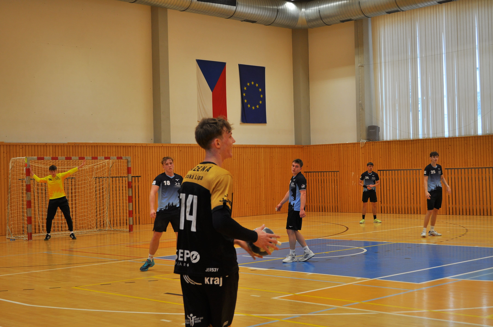

Nové dresy pro sezonu 26
10. března 2026

Českolipská házená vstupuje do zbývající části sezóny v novém kabátě! S hrdostí vám představujeme zbrusu novou sadu domácích dresů, které kombinují moderní sportovní technologie s našimi tradičními klubovými barvami.
Designu i tentokrát neochvějně dominuje dravá žlutá a elegantní černá. Na hrudi samozřejmě nechybí naše klubové logo a dominantní nápis Česká Lípa. Výrobce si dal záležet na detailech, takže na ramenou najdete decentní dynamické prvky, které symbolizují rychlost a tvrdost našeho sportu. Brankářské dresy pak dostaly speciální kontrastní barvu, aby naši gólmani v brankovišti ještě více vynikli.
Není to ale jen o vzhledu. Nové dresy jsou vyrobeny z ultra lehkého, prodyšného materiálu, který skvěle odvádí pot a zaručuje hráčům maximální pohodlí a svobodu pohybu při ostrých soubojích na brankovišti. Materiál je navíc vysoce odolný proti protržení, což pivotmani a spojky při těsné obraně soupeřů rozhodně ocení.
Kluci už si dresy vyzkoušeli na focení a reakce v kabině jsou stoprocentně pozitivní. První ostrý start v novém čeká naše muže už při nejbližším domácím zápase. Věříme, že nám nová identita přinese štěstí a společně v nich oslavíme spoustu vybojovaných bodů.
Jak se vám nová sada líbí? Dorazte v barvách Lípy na příští domácí utkání a přijďte kluky podpořit přímo na tribuny!